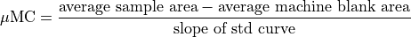
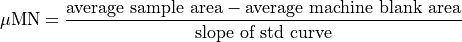

Dissolved Organic Carbon, Total Organic Carbon, Dissolved Nitrogen and Total Nitrogen¶
- PI
Dennis Hansell (UM)
- Technician
Chelsi Lopez
- Analysts
Lillian Custals
Chelsi Lopez
- Support
NSF
Project Goals¶
The goal of the DOM project is to evaluate dissolved organic carbon (DOC), total organic carbon (TOC), total nitrogen (TN) and total dissolved nitrogen (TDN) concentrations along the I06S zonal transect.
Sampling¶
DOC profiles were taken from approximately every two out of three stations from 24 of 36 niskin bottles ranging the full depth of the water column (32 of 54 stations; ~768 DOC/TN samples). DOC samples were passed through an inline filter holding a combusted GF/F filter attached directly to the Niskin for all depths collected. This was done to eliminated particles larger than 0.7 µm from the sample. To reduce contamination by the filter or filter holder, a new filter and holder was used after 12 samples were collected through it. Total organic carbon (TOC) samples were collected from 19 of 36 depths per station, approximately at all depths deeper than 250 meters (32 of 54 stations; ~608 TOC/TDN samples). Though previous work has suggested that DOC at depth is equivalent to TOC (or whole water sampels taken from the niskin, without the need for inline filtration), we aimed to ensure that this assumption is valid by collecting both whole water (TOC) and filtered water (DOC) during this cruise. All samples were rinsed 3 times with about 5 mL of seawater and collected into combusted 40 mL glass EPA vials. Samples were fixed with 100 µL of 4N Hydrochloric acid and stored at room temperature on board. Samples were shipped back to University of Miami for analysis via high temperature combustion on Shimadzu TOC-V or TOC L analyzers.
- Sample Vials were prepared before the cruise by combustion at 450°C for 12 hours to remove any organic matter.
Vial caps were cleaned by soaking in DI water overnight, followed by a 3 times rinse with DI water and left out to dry.
Sampling goals for this cruise were to continue high resolution, long term monitoring of DOC distribution throughout the water column, in order to help better understand biogeochemical cycling in global oceans.
Standard Operating Procedure for DOC Analyses- Hansell Lab UM¶
DOC samples will be analyzed via high temperature combustion using a Shimadzu TOC-V or Shimadzu TOC-L at an in shore based laboratory at the University of California, Santa Barbara. The operating conditions of the Shimadzu TOC-V have been slightly modified from the manufacturer’s model system. The condensation coil has been removed and the headspace of an internal water trap was reduced to minimize the system’s dead space. The combustion tube contains 0.5 cm Pt pillows placed on top of Pt alumina beads to improve peak shape and to reduce alteration of combustion matrix throughout the run. CO2 free carrier gas is produced with a Whatman® gas generator [Carlson2010]. Samples are drawn into a 5 ml injection syringe and acidified with 2M HCL (1.5%) and sparged for 1.5 minutes with CO2 free gas Three to five replicate 100 µl of sample are injected into a combustion tube heated to 680°C. The resulting gas stream is passed though several water and halide traps, including an added magnesium perchlorate trap. The CO2 in the carrier gas is analyzed with a non-dispersive infrared detector and the resulting peak area is integrated with Shimadzu chromatographic software. Injections continue until the at least three injections meet the specified range of a SD of 0.1 area counts, CV or best 3 of 5 injections.
Extensive conditioning of the combustion tube with repeated injections of low carbon water (LCW) and deep seawater is essential to minimize the machine blanks. After conditioning, the system blank is assessed with UV oxidized low carbon water. The system response is standardized daily with a four-point calibration curve of potassium hydrogen phthalate solution in LCW. All samples are systematically referenced against low carbon water and deep Sargasso Sea (2600 m) or Santa Barbara Channel (400 m) reference waters and surface Sargasso Sea or Santa Barbara Channel sea water every 6 – 8 analyses [Hansell1998]. The standard deviation of the deep and surface references analyzed throughout a run generally have a coefficient of variation ranging between 1-3% over the 3-7 independent analyses (number of references depends on size of the run). Daily reference waters were calibrated with DOC CRM provided by D. Hansell (University of Miami; [Hansell2005]).
DOC calculation¶

Standard Operating Procedure for TN/TDN analyses- Hansell Lab UM¶
TN/TDN samples were analyzed via high temperature combustion using a Shimadzu TOC-V with attached Shimadzu TNM1 unit at an in-shore based laboratory at the University of California, Santa Barbara. The operating conditions of the Shimadzu TOC-V were slightly modified from the manufacturer’s model system. The condensation coil was removed and the headspace of an internal water trap was reduced to minimize the system’s dead space. The combustion tube contained 0.5 cm Pt pillows placed on top of Pt alumina beads to improve peak shape and to reduce alteration of combustion matrix throughout the run. Carrier gas was produced with a Whatman® gas generator [Carlson2010] and ozone was generated by the TNM1 unit at 0.5L/min flow rate. Three to five replicate 100 µl of sample were injected at 130mL/min flow rate into the combustion tube heated to 680°C, where the TN in the sample was converted to nitric oxide (NO). The resulting gas stream was passed through an electronic dehumidifier. The dried NO gas then reacted with ozone producing an excited chemiluminescence NO2 species [Walsh1989] and the fluorescence signal was detected with a Shimadzu TNMI chemiluminescence detector. The resulting peak area was integrated with Shimadzu chromatographic software. Injections continue until at least three injections meet the specified range of a SD of 0.1 area counts, CV or best 3 of 5 injections.
Extensive conditioning of the combustion tube with repeated injections of low nitrogen water and deep seawater was essential to minimize the machine blanks. After conditioning, the system blank was assessed with UV oxidized low nitrogen water. The system response was standardized daily with a four-point calibration curve of potassium nitrate solution in blank water. All samples were systematically referenced against low nitrogen water and deep Sargasso Sea reference waters (2600 m) and surface Sargasso Sea water every 6 – 8 analyses [Hansell1998]. Daily reference waters were calibrated with deep CRM provided by D. Hansell (University of Miami; [Hansell2005]).
Dissolved organic nitrogen (DON) concentrations are calculated as the difference between TDN and DIN. Samples with less than 10 µmol/kg DIN are most reliable estimates of DON.
TDN calculation¶

- Carlson2010(1,2)
Carlson, C. A., D. A. Hansell, N. B. Nelson, D. A. Siegel, W. M. Smethie, S. Khatiwala, M. M. Meyers and E. Halewood 2010. Dissolved organic carbon export and subsequent remineralization in the mesopelagic and bathypelagic realms of the North Atlantic basin. Deep Sea Research II, 57: 1433-1445.
- Hansell1998(1,2)
Hansell, D.A. and C.A. Carlson 1998. Deep ocean gradients in the concentration of dissolved organic carbon. Nature, 395: 263-266.
- Hansell2005(1,2)
Hansell, D.A. 2005 Dissolved Organic Carbon Reference Material Program. EOS, 35:318-319.
- Walsh1989
Walsh, T.W., 1989. Total dissolved nitrogen in seawater: a new high-temperature combustion method and a comparison with photo-oxidation. Mar. Chem., 26:295-311.
Carbon Isotopes in seawater (14/13C)¶
- PI
Ann McNichol (WHOI)
- Technician
Chelsi Lopez
A total of 432 samples were collected from stations collected along the I06S transect. 32 samples each were taken from 17 of 54 stations, approximately every fourth station. Samples were collected in 500 mL airtight glass bottles. Using silicone tubing, the flasks were rinsed 3 times with seawater from the surface niskin. While keeping the tubing at the bottom of the flask, the flask was filled and flushed by allowing it to overflow 1.5 times its volume. Once the sample was taken, about 10 mL of water was removed to create a headspace and 100 µL of saturated mercuric chloride solution was added to the sample. To avoid contamination, gloves were used when handling all sampling equipment and plastic bags were used to cover any surface where sampling or processing occurred.
After each sample was taken, the glass stoppers and ground glass joint were dried and Apiezon-M grease was applied to ensure an airtight seal. Stoppers were secured with a large rubber band wrapped around the entire bottle. Samples were stored in AMS crates in the ship’s dry laboratory. Samples were shipped to WHOI for analysis.
The radiocarbon/DIC content of the seawater (DI14C) is measured by extracting the inorganic carbon as CO2 gas, converting the gas to graphite and then counting the number of 14C atoms in the sample directly using an accelerated mass spectrometer (AMS).
Radiocarbon values will be reported as 14C using established procedures modified for AMS applications. The 13C/12C of the CO2 extracted from seawater is measured relative to the 13C/12C of a CO2 gas standard calibrated to the PDB standard using and isotope radio mass spectrometer (IRMS) at NOSAMS.